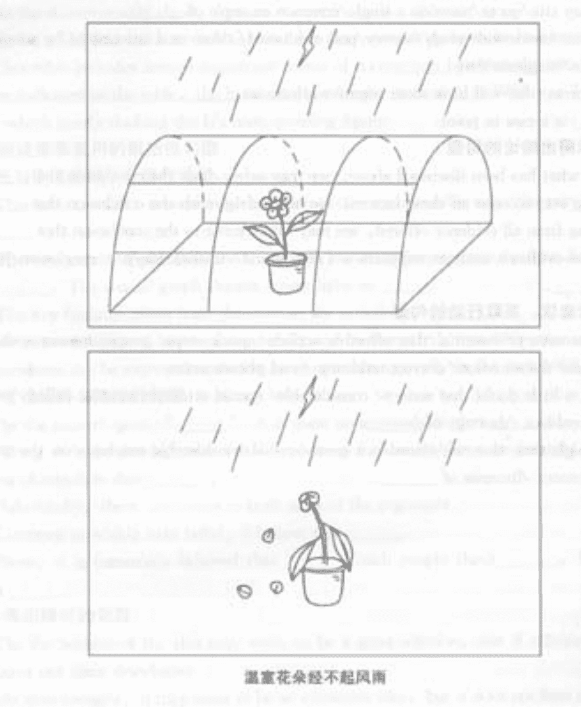

2003年全国硕士研究生入学统一考试英语试题(真题解析)
Section I Use of English
Directions：
Read the following text. Choose the best word(s) for each numbered blank and mark A, B, C OR D on ANSWER SHEET 1. (10 points)
Teachers need to be aware of the emotional, intellectual, and physical changes that young adults experience. And they also need to give serious 1 to how they can best 2 such changes. Growing bodies need movement and 3 , but not just in ways that emphasize competition. 4 they are adjusting to their new bodies and a whole host of new intellectual and emotional challenges, teenagers are especially self-conscious and need the 5 that comes from achieving success and knowing that their accomplishments are 6 by others. However, the typical teenage lifestyle is already filled with so much competition that it would be 7 to plan activities in which there are more winners than losers, 8 ，publishing newsletters with many student-written book reviews,9 student artwork, and sponsoring book discussion clubs. A variety of small clubs can provide 10 opportunities for leadership, as well as for practice in successful 11 dynamics. Making friends is extremely important to teenagers, and many shy students need the 12 of some kind of organization with a supportive adult 13 visible in the background.
In these activities, it is important to remember that the young teens have 14 attention spans. A variety of activities should be organized 15 participants can remain active as long as they want and then go on to 16 else without feeling guilty and without letting the other participants 17 . This does not mean that adults must accept irresponsibility. 18 they can help students acquire a sense of commitment by 19 for roles that are within their 20 and their attention spans and by having clearly stated rules.
| 1. | [A] thought | [B] idea | [C] opinion | [D] advice |
|---|---|---|---|---|
| 2. | [A] strengthen | [B] accommodate | [C] stimulate | [D] enhance |
| 3. | [A] care | [B] nutrition | [C] exercise | [D] leisure |
| 4. | [A] If | [B] Although | [C] Whereas | [D] Because |
| 5. | [A] assistance | [B] guidance | [C] confidence | [D] tolerance |
| 6. | [A] claimed | [B] admired | [C] ignored | [D] surpassed |
| 7. | [A] improper | [B] risky | [C] fair | [D] wise |
| 8. | [A] in effect | [B] as a result | [C] for example | [D] in a sense |
| 9. | [A] displaying | [B] describing | [C] creating | [D] exchanging |
| 10. | [A] durable | [B] excessive | [C] surplus | [D] multiple |
| 11. | [A] group | [B] individual | [C] personnel | [D] corporation |
| 12. | [A] consent | [B] insurance | [C] admission | [D] security |
| 13. | [A] particularly | [B] barely | [C] definitely | [D] rarely |
| 14. | [A] similar | [B] long | [C] different | [D] short |
| 15. | [A] if only | [B] now that | [C] so that | [D] even if |
| 16. | [A] everything | [B] anything | [C] nothing | [D] something |
| 17. | [A] off | [B] down | [C] out | [D] alone |
| 18. | [A] On the contrary | [B] On the average | [C] On the whole | [D] On the other hand |
| 19. | [A] making | [B] standing | [C] planning | [D] taking |
| 20. | [A] capability | [B] responsibility | [C] proficiency | [D] efficiency |
Section II Reading Comprehension
Part A
Directions:
Read the following four texts. Answer the questions below each text by choosing [A], [B], [C] or [D]. Mark your answers on ANSWER SHEET 1. (40 points)
Text 1
Wild Bill Donovan would have loved the Inter net. The American spymaster who built the Office of Strategic Services in the World War Ⅱ and later laid the roots for the CIA was fascinated with information. Donovan believed in using whatever tools came to hand in the “great game” of espionage—spying as a “profession.” These days the Net, which has already re-made such everyday pastimes as buying books and sending mail, is reshaping Donovan’s vocation as well.
The latest revolution isn’t simply a matter of gentlemen reading other gentlemen’s e-mail. That kind of electronic spying has been going on for decades. In the past three or four years, the World Wide Web has given birth to a whole industry of point-and-click spying. The spooks call it “open source intelligence,” and as the Net grows, it is becoming increasingly influential. In 1995 the CIA held a contest to see who could compile the most data about Burundi. The winner, by a large margin, was a tiny Virginia company called Open-Source Solutions，whose clear advantage was its mastery of the electronic world.
Among the firms making the biggest splash in the new world is Straitford, Inc., a private intelligence-analysis firm based in Austin, Texas. Straitford makes money by selling the results of spying (covering nations from Chile to Russia) to corporations like energy-services firm McDermott International. Many of its predictions are available online at .
Straiford president George Friedman says he sees the online world as a kind of mutually reinforcing tool for both information collection and distribution, a spymaster’s dream. Last week his firm was busy vacuuming up data bits from the far corners of the world and predicting a crisis in Ukraine. “As soon as that report runs, we’ll suddenly get 500 new internet sign-ups from Ukraine,” says Friedman, a former political science professor. “And we’ll hear back from some of them.” Open-source spying does have its risks, of course, since it can be difficult to tell good information from bad. That’s where Straitford earns its keep.
Friedman relies on a lean staff of 20 in Austin. Several of his staff members have military-intelligence backgrounds. He sees the firm’s outsider status as the key to its success. Straitford’s briefs don’t sound like the usual Washington back-and-forthing, whereby agencies avoid dramatic declarations on the chance they might be wrong. Straitford, says Friedman, takes pride in its independent voice.
21. The emergence of the Net has _____.
| [A] received support from fans like Donovan |
|---|
| [B] remolded the intelligence services |
| [C] restored many common pastimes |
| [D] revived spying as a profession |
22. Donovan’s story is mentioned in the text to _____.
| [A] introduce the topic of online spying |
|---|
| [B] show how he fought for the US |
| [C] give an episode of the information war |
| [D] honor his unique services to the CIA |
23. The phrase “making the biggest splash” (line 1,paragraph 3) most probably means _____.
| [A] causing the biggest trouble |
|---|
| [B] exerting the greatest effort |
| [C] achieving the greatest success |
| [D] enjoying the widest popularity |
24. It can be learned from paragraph 4 that _____.
| [A] straitford’s prediction about Ukraine has proved true |
|---|
| [B] straitford guarantees the truthfulness of its information |
| [C] straitford’s business is characterized by unpredictability |
| [D] straitford is able to provide fairly reliable information |
25. Straitford is most proud of its _____.
| [A] official status |
|---|
| [B] nonconformist image |
| [C] efficient staff |
| [D] military background |
Text 2
To paraphrase 18th-century statesman Edmund Burke, “all that is needed for the triumph of a misguided cause is that good people do nothing.” One such cause now seeks to end biomedical research because of the theory that animals have rights ruling out their use in research. Scientists need to respond forcefully to animal rights advocates, whose arguments are confusing the public and thereby threatening advances in health knowledge and care. Leaders of the animal rights movement target biomedical research because it depends on public funding, and few people understand the process of health care research. Hearing allegations of cruelty to animals in research settings, many are perplexed that anyone would deliberately harm an animal.
For example, a grandmotherly woman staffing an animal rights booth at a recent street fair was distributing a brochure that encouraged readers not to use anything that comes from or is tested in animals—no meat, no fur, no medicines. Asked if she opposed immunizations, she wanted to know if vaccines come from animal research. When assured that they do, she replied, “Then I would have to say yes.” Asked what will happen when epidemics return, she said, “Don’t worry, scientists will find some way of using computers.” Such well-meaning people just don’t understand.
Scientists must communicate their message to the public in a compassionate, understandable way—in human terms, not in the language of molecular biology. We need to make clear the connection between animal research and a grandmother’s hip replacement, a father’s bypass operation, a baby’s vaccinations, and even a pet’s shots. To those who are unaware that animal research was needed to produce these treatments, as well as new treatments and vaccines, animal research seems wasteful at best and cruel at worst.
Much can be done. Scientists could “adopt” middle school classes and present their own research. They should be quick to respond to letters to the editor, lest animal rights misinformation go unchallenged and acquire a deceptive appearance of truth. Research institutions could be opened to tours, to show that laboratory animals receive humane care. Finally, because the ultimate stakeholders are patients, the health research community should actively recruit to its cause not only well-known personalities such as Stephen Cooper, who has made courageous statements about the value of animal research, but all who receive medical treatment. If good people do nothing, there is a real possibility that an uninformed citizenry will extinguish the precious embers of medical progress.
26. The author begins his article with Edmund Burke’s words to _____.
| [A] call on scientists to take some actions |
|---|
| [B] criticize the misguided cause of animal rights |
| [C] warn of the doom of biomedical research |
| [D] show the triumph of the animal rights movement |
27. Misled people tend to think that using an animal in research is _____.
| [A] cruel but natural |
|---|
| [B] inhuman and unacceptable |
| [C] inevitable but vicious |
| [D] pointless and wasteful |
28. The example of the grandmotherly woman is used to show the public’s _____.
| [A] discontent with animal research |
|---|
| [B] ignorance about medical science |
| [C] indifference to epidemics |
| [D] anxiety about animal rights |
29. The author believes that, in face of the challenge from animal rights advocates, scientists should _____.
| [A] communicate more with the public |
|---|
| [B] employ hi-tech means in research |
| [C] feel no shame for their cause |
| [D] strive to develop new cures |
30. From the text we learn that Stephen Cooper is _____.
| [A] a well-known humanist |
|---|
| [B] a medical practitioner |
| [C] an enthusiast in animal rights |
| [D] a supporter of animal research |
Text 3
In recent years, railroads have been combining with each other, merging into supersystems, causing heightened concerns about monopoly. As recently as 1995, the top four railroads accounted for under 70 percent of the total ton-miles moved by rails. Next year, after a series of mergers is completed, just four railroads will control well over 90 percent of all the freight moved by major rail carriers.
Supporters of the new supersystems argue that these mergers will allow for substantial cost reductions and better coordinated service. Any threat of monopoly, they argue, is removed by fierce competition from trucks. But many shippers complain that for heavy bulk commodities traveling long distances, such as coal, chemicals, and grain, trucking is too costly and the railroads therefore have them by the throat.
The vast consolidation within the rail industry means that most shippers are served by only one rail company. Railroads typically charge such“captive”shippers 20 to 30 percent more than they do when another railroad is competing for the business. Shippers who feel they are being overcharged have the right to appeal to the federal government's Surface Transportation Board for rate relief, but the process is expensive, time consuming, and will work only in truly extreme cases.
Railroads justify rate discrimination against captive shippers on the grounds that in the long run it reduces everyone's cost. If railroads charged all customers the same average rate, they argue, shippers who have the option of switching to trucks or other forms of transportation would do so, leaving remaining customers to shoulder the cost of keeping up the line. It's theory to which many economists subscribe, but in practice it often leaves railroads in the position of determining which companies will flourish and which will fail.“Do we really want railroads to be the arbiters of who wins and who loses in the marketplace?”asks Martin Bercovici, a Washington lawyer who frequently represents shipper.
Many captive shippers also worry they will soon be hit with a round of huge rate increases. The railroad industry as a whole, despite its brightening fortuning fortunes, still does not earn enough to cover the cost of the capital it must invest to keep up with its surging traffic. Yet railroads continue to borrow billions to acquire one another, with Wall Street cheering them on. Consider the $10.2 billion bid by Norfolk Southern and CSX to acquire Conrail this year. Conrail's net railway operating income in 1996 was just $427 million, less than half of the carrying costs of the transaction. Who's going to pay for the rest of the bill? Many captive shippers fear that they will, as Norfolk Southern and CSX increase their grip on the market.
31. According to those who support mergers, railway monopoly is unlikely because _____.
| [A] cost reduction is based on competition. |
|---|
| [B] services call for cross-trade coordination. |
| [C] outside competitors will continue to exist. |
| [D] shippers will have the railway by the throat. |
32. What is many captive shippers’ attitude towards the consolidation in the rail industry?
| [A] Indifferent. |
|---|
| [B] Supportive. |
| [C] Indignant. |
| [D] Apprehensive. |
33. It can be inferred from paragraph 3 that _____.
| [A] shippers will be charged less without a rival railroad. |
|---|
| [B] there will soon be only one railroad company nationwide. |
| [C] overcharged shippers are unlikely to appeal for rate relief. |
| [D] a government board ensures fair play in railway business. |
34. The word “arbiters”(line 7,paragraph 4)most probably refers to those _____.
| [A] who work as coordinators. |
|---|
| [B] who function as judges. |
| [C] who supervise transactions. |
| [D] who determine the price. |
35. According to the text, the cost increase in the rail industry is mainly caused by _____.
| [A] the continuing acquisition. |
|---|
| [B] the growing traffic. |
| [C] the cheering Wall Street. |
| [D] the shrinking market. |
Text 4
It is said that in England death is pressing, in Canada inevitable and in California optional. Small wonder. Americans’ life expectancy has nearly doubled over the past century. Failing hips can be replaced, clinical depression controlled, cataracts removed in a 30-minute surgical procedure. Such advances offer the aging population a quality of life that was unimaginable when I entered medicine 50 years ago. But not even a great health-care system can cure death—and our failure to confront that reality now threatens this greatness of ours.
Death is normal; we are genetically programmed to disintegrate and perish, even under ideal conditions. We all understand that at some level, yet as medical consumers we treat death as a problem to be solved. Shielded by third-party payers from the cost of our care, we demand everything that can possibly be done for us, even if it’s useless. The most obvious example is late-stage cancer care. Physicians—frustrated by their inability to cure the disease and fearing loss of hope in the patient—too often offer aggressive treatment far beyond what is scientifically justified.
In 1950, the US spent $12.7 billion on health care. In 2002, the cost will be $1,540 billion. Anyone can see this trend is unsustainable. Yet few seem willing to try to reverse it. Some scholars conclude that a government with finite resources should simply stop paying for medical care that sustains life beyond a certain age—say 83 or so. Former Colorado governor Richard Lamm has been quoted as saying that the old and infirm “have a duty to die and get out of the way”, so that younger, healthier people can realize their potential.
I would not go that far. Energetic people now routinely work through their 60s and beyond, and remain dazzlingly productive. At 78, Viacom chairman Sumner Redstone jokingly claims to be 53. Supreme Court Justice Sandra Day O’Connor is in her 70s, and former surgeon general C. Everett Koop chairs an Internet start-up in his 80s.These leaders are living proof that prevention works and that we can manage the health problems that come naturally with age. As a mere 68-year-old, I wish to age as productively as they have.
Yet there are limits to what a society can spend in this pursuit. As a physician, I know the most costly and dramatic measures may be ineffective and painful. I also know that people in Japan and Sweden, countries that spend far less on medical care, have achieved longer, healthier lives than we have. As a nation, we may be overfunding the quest for unlikely cures while underfunding research on humbler therapies that could improve people’s lives.
36. What is implied in the first sentence?
| [A] Americans are better prepared for death than other people. |
|---|
| [B] Americans enjoy a higher life quality than ever before. |
| [C] Americans are over-confident of their medical technology. |
| [D] Americans take a vain pride in their long life expectancy. |
37. The author uses the example of caner patients to show that _____.
| [A] medical resources are often wasted |
|---|
| [B] doctors are helpless against fatal diseases |
| [C] some treatments are too aggressive |
| [D] medical costs are becoming unaffordable |
38. The author’s attitude toward Richard Lamm’s remark is one of _____.
| [A] strong disapproval |
|---|
| [B] reserved consent |
| [C] slight contempt |
| [D] enthusiastic support |
39. In contras to the US, Japan and Sweden are funding their medical care _____.
| [A] more flexibly |
|---|
| [B] more extravagantly |
| [C] more cautiously |
| [D] more reasonably |
40. The text intends to express the idea that _____.
| [A]medicine will further prolong people’s lives |
|---|
| [B]life beyond a certain limit is not worth living |
| [C] death should be accepted as a fact of life |
| [D] excessive demands increase the cost of health care |
Part B
Directions:
Read the following text carefully and then translate the underlined segments into Chinese. Your translation should be written clearly on ANSWER SHEET 2. (10 points)
Human beings in all times and places think about their world and wonder at their place in it. Humans are thoughtful and creative, possessed of insatiable curiosity. (41) Furthermore, humans have the ability to modify the environment in which they live, thus subjecting all other life forms to their own peculiar ideas and fancies. Therefore, it is important to study humans in all their richness and diversity in a calm and systematic manner, with the hope that the knowledge resulting from such studies can lead humans to a more harmonious way of living with themselves and with all other life forms on this planet Earth.
“Anthropology” derives from the Greek words anthropos “human” and logos “the study of.” By its very name, anthropology encompasses the study of all humankind.
Anthropology is one of the social sciences. (42) Social science is that branch of intellectual enquiry which seeks to study humans and their endeavors in the same reasoned, orderly, systematic, and dispassioned manner that natural scientists use for the study of natural phenomena.
Social science disciplines include geography, economics, political, science, psychology, and sociology. Each of these social sciences has a subfield or specialization which lies particularly close to anthropology.
All the social sciences focus upon the study of humanity. Anthropology is a field-study oriented discipline which makes extensive use of the comparative method in analysis. (43) The emphasis on data gathered first-hand, combined with a cross-cultural perspective brought to the analysis of cultures past and present, makes this study a unique and distinctly important social science.
Anthropological analyses rest heavily upon the concept of culture. Sir Edward Tylor’s formulation of the concept of culture was one of the great intellectual achievements of 19th century science. (44) Tylor defined culture as “…that complex whole which includes belief, art, morals, law, custom, and any other capabilities and habits acquired by man as a member of society.” This insight, so profound in its simplicity, opened up an entirely new way of perceiving and understanding human life. Implicit within Tylor’s definition is the concept that culture is learned. shared, and patterned behavior.
(45) Thus, the anthropological concept of “culture,” like the concept of “set” in mathematics, is an abstract concept which makes possible immense amounts of concrete research and understanding.
Section III Writing
46. Directions:
Study the following set of drawings carefully and write an essay entitled in which you should
1) describe the set of drawings, interpret its meaning, and
2) point out its implications in our life.
You should write about 200 words neatly on ANSWER SHEET 2. (20 points)
